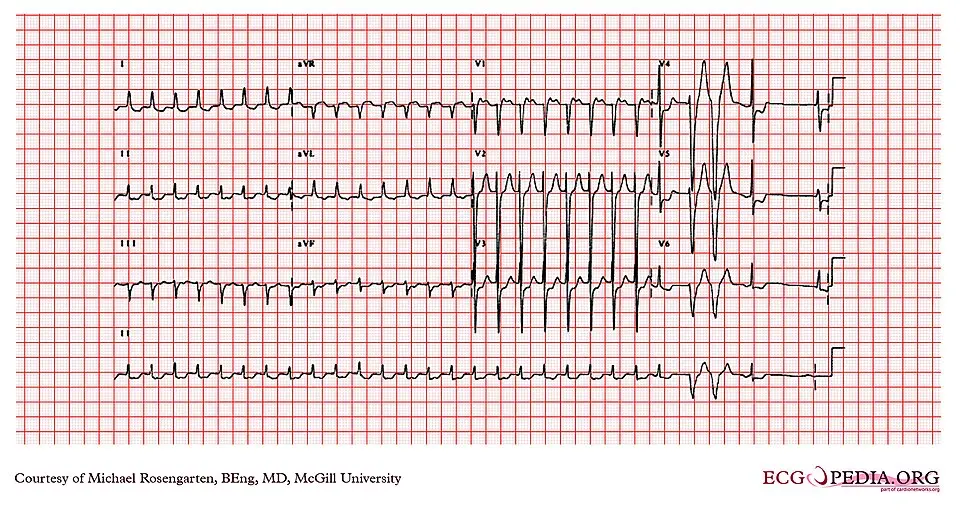

DX.8 — Troubles anxieux
1. Définition
Les troubles anxieux sont des peurs ou des inquiétudes excessives, hors de proportion avec le danger, qui altèrent la vie quotidienne. Le diagnostic repose sur des critères cliniques, rappelés au point 83.
Notions voisines à ne pas confondre : peur normaleLa peur est une émotion de base qui prépare à fuir, combattre ou se cacher. Elle devient pathologique si elle est trop fréquente, trop intense ou disproportionnée au danger2., attaque de panique isoléeUne attaque de panique ne fait pas un trouble panique. Un traitement précoce de l'attaque peut limiter l'évolution3., dépressionElle coexiste souvent avec l'anxiété et se chevauche avec le TAG (sommeil, humeur, épuisement). Le chapitre « Dépression » traite ce sujet., anxiété due à une maladie ou à une substanceHyperthyroïdie, arythmie, hypoglycémie, caféine, alcool, sevrage. Elle exclut le diagnostic de trouble anxieux4. et anxiété de maladieCrainte d'une maladie grave devant des sensations banales. Elle mène à des vérifications répétées et se rapproche de la panique..
2. Épidémiologie (Suisse, puis Europe)
En Suisse, l'enquête sur la santé de 2022 a mesuré pour la première fois les symptômes du TAG1. Ils sont légers chez 20,8 % et modérés à sévères chez 6,3 % de la population résidante suisse (ESS 2022, Obsan 2024)1. Les femmes s'en plaignent plus souvent que les hommes, et les jeunes davantage que les personnes âgées1. La même année, 7,8 % de cette population a reçu un traitement pour un problème psychique (ESS 2022)1.
| Indicateur | Part de la population indiquée (%) ou effectif | Population, source |
|---|---|---|
| Symptômes de TAG | 20,8 % légers ; 6,3 % modérés à sévères1 | Population résidante suisse, ESS 2022 (Obsan 2024)1 |
| Personnes traitées pour problèmes psychiques | 7,8 % sur 12 mois1 | Suisse, ESS 2022 |
| Patients en cabinet de psychiatrie ou de psychothérapie | 533 000 (59,4 pour 1 000 assurés)1 | Suisse, 2022, hors modèle de prescription1 |
| Troubles anxieux sur 12 mois1 | Environ 10 % des hommes, 20 % des femmes1 | Enquête allemande citée par l'article de 20231 |
| TAG sur 12 mois1 | Environ 2 % dans le monde ; 3 à 4 % aux États-Unis ; deux fois plus chez la femme1 | Population générale, MSD 20261 |
| Trouble panique sur 12 mois1 | 2 à 3 % ; début à la fin de l'adolescence ; deux fois plus chez la femme1 | Population générale, MSD 20261 |
| Attaques de panique | 8 à 23 % sur la vie entière1 | Population générale, MSD 20261 |
| Part parmi les consultants pour fatigue | Problèmes psychologiques : 16,5 %1 | 571 adultes avec un nouvel épisode de fatigue, premier recours, suivi d'un an (Nijrolder 2009)1 |
| Personnes touchées sans traitement adéquat | Environ deux tiers | Personnes touchées par un trouble anxieux, Diemer 20231 |
| Dépistage ciblé | Consultants fréquents et patients qui cherchent une réassurance ; la méta-analyse sur la fatigue en soins primaires insiste sur la dépression et les problèmes psychosociaux | Soins primaires, Stadje 20161 |
| Évolution sans traitement | Chronicité, association à la dépression et aux abus de substances ; les enjeux sont majeurs | Personnes touchées par un trouble anxieux, Diemer 20231 |
3. Physiopathologie
La cause des troubles anxieux reste inconnue4. L'anxiété pathologique combine une peur apprise, une lecture catastrophique des sensations et l'évitement2. Le modèle suivant sert au raisonnement clinique.
Cascade, étape par étape. Amorce, niveau moléculaire : le système de la peur est activé. La sérotonine et le GABA modulent sa réponse ; les ISRS ciblent la sérotonine8 et les benzodiazépines le récepteur GABA-A ; la prégabaline agit sur la sous-unité α2-δ des canaux calciques10. Développement, niveau cellulaire : l'activation sympathique déclenche les signes du corps : palpitations, sueurs, vertige, dyspnée, oppression thoracique. Installation, niveau tissulaire et cognitif : le patient lit ces sensations comme un danger (« infarctus », « folie »). Cette lecture est la peur de la peurPeur dirigée vers les symptômes d'anxiété eux-mêmes. Un cœur qui bat vite devient un signe d'infarctus imminent. La psychoéducation corrige cette lecture.. Maintien, niveau clinique : l'évitement soulage à court terme mais empêche d'apprendre que le danger n'existe pas, ce qui entretient la maladie.
Cette cascade explique le pronostic. La fatigue vient de l'éveil permanent, de la tension musculaire et du sommeil perturbé : ce sont des critères du TAG4. Sans traitement, la maladie évolue vers la chronicité, la dépression et l'abus de substances.
| Lésion ou perturbation | Exploration qui la montre | Thérapeutique qui la corrige (mécanisme) |
|---|---|---|
| Lecture catastrophique des sensations | Entretien : questions sur la peur des symptômes | TCC et psychoéducation : corrigent l'interprétation |
| Évitement qui entretient la peur | Entretien : situations évitées | Exposition progressive : réapprend que le danger n'existe pas |
| Régulation sérotoninergique insuffisante (hypothèse) | Aucun examen ne la montre ; le diagnostic est clinique | CipralexDCI : escitalopram (Cipralex®, n° 55961) Classe : inhibiteur sélectif de la recapture de la sérotonine (ATC N06AB10). Groupe : antidépresseurs ISRS (ATC N06AB). Chefs de file :
|
| Excitabilité neuronale excessive | Entretien ; bilan somatique pour exclure une cause organique | LyricaDCI : prégabaline (Lyrica®, n° 57057) Classe : analogue de l'acide gamma-aminobutyrique (ATC N02BF02). Groupe : autres analgésiques et antipyrétiques (ATC N02B). Chefs de file :
|
| Crise d'anxiété aiguë | Entretien ; ECG et signes vitaux pour exclure une urgence | TemestaDCI : lorazépam (Temesta®, n° 36203) Classe : benzodiazépine anxiolytique (ATC N05BA06). Groupe : anxiolytiques (ATC N05B). Chefs de file :
|
4. Démarche diagnostique
La démarche suit la gravité d'abord. Le diagnostic d'anxiété est un diagnostic d'exclusion : on écarte d'abord une cause somatique ou toxique2,4.
Étape 1. Les drapeaux rouges sont à exclure d'abord.
| Drapeau | Signe ou examen qui tranche | Piège | Conduite immédiate |
|---|---|---|---|
| 🚩 Idées suicidairesL'anxiété s'associe à la dépression et à l'abus de substances. Le risque suicidaire doit être demandé directement, notamment chez les moins de 30 ans sous antidépresseur2,3. | Question directe sur les idées de mort, le plan, les moyens | Penser qu'un patient anxieux n'est pas à risque | Évaluation psychiatrique urgente |
| 🚩 Douleur thoracique, syncope, dyspnéeCes signes évoquent un infarctus, une arythmie ou une embolie. L'attaque de panique est un diagnostic d'exclusion. | ECG, signes vitaux, troponine selon la clinique | Conclure à la panique sans ECG, surtout si facteurs de risque cardiovasculaires | Urgences ; ne pas hospitaliser en psychiatrie avant exclusion |
| 🚩 Signes de thyrotoxicoseTachycardie, tremblement, perte de poids et sueurs imitent l'anxiété. La TSH tranche. Le chapitre « Hyperthyroïdie » traite ce sujet2,4. | TSH, pouls, tremblement, goitre | Traiter l'anxiété d'une hyperthyroïdie par un anxiolytique seul | Doser la TSH avant tout traitement |
| 🚩 HypoglycémieSueurs, tremblements, palpitations et anxiété surviennent à jeun ou après l'insuline. La glycémie tranche2. | Glycémie capillaire pendant l'épisode | Étiqueter « panique » un épisode hypoglycémique | Resucrage, glycémie, avis diabétologique |
| 🚩 Sevrage ou intoxicationLe sevrage d'alcool ou de benzodiazépines, la caféine et les stimulants provoquent anxiété, tremblements et tachycardie. Le sevrage grave menace la vie3,4. | Anamnèse des substances, signes de sevrage, état de conscience | Omettre de demander la consommation d'alcool et de cocaïne | Prise en charge du sevrage ; arrêt des stimulants |
| 🚩 Crise convulsive, déficit neurologiqueL'épilepsie, la sclérose en plaques et les troubles vestibulaires imitent certaines crises d'anxiété2. | Examen neurologique, EEG, IRM selon la clinique | Attribuer à l'anxiété une aura épileptique | Avis neurologique |
Étape 2. En l'absence de drapeau rouge, on procède par étapes.
1. On évoque le diagnostic devant une peur ou une inquiétude excessive, des symptômes somatiques répétés ou des consultations fréquentes3.
2. Poser deux questions de dépistage (GAD-2) sur l'anxiété et le contrôle de l'inquiétude3.
3. On précise le type : panique, agoraphobie, phobie sociale, phobie spécifique ou TAG2.
4. Exclure une cause somatique ou toxique par l'examen et le bilan minimal du point 9.
5. Vérifier les critères cliniques (point 8) et mesurer le retentissement fonctionnel3,4.
6. On cherche la dépression, l'abus de substances et d'autres troubles anxieux, et on traite d'abord le trouble le plus sévère.
| DD à ne pas manquer | Signe ou examen qui tranche | Piège |
|---|---|---|
| Syndrome coronarien, arythmie | ECG avec bande de rythme | Une patiente jeune n'est pas à l'abri |
| Hyperthyroïdie, hypothyroïdie | TSH | Attribuer à l'anxiété une thyrotoxicose sans doser la TSH |
| Hypoglycémie | Glycémie pendant l'épisode | Un épisode isolé peut être manqué |
| Troubles du calcium et du potassium | Électrolytes | Symptômes proches de la panique |
| Asthme, BPCO | Auscultation, spirométrie | La dyspnée est attribuée à l'anxiété à tort |
| Épilepsie, sclérose en plaques, migraine | Examen neurologique, EEG, IRM | Aura confondue avec une attaque de panique |
| Dépression | Humeur, perte d'intérêt | Les deux troubles se chevauchent |
5. Anamnèse ciblée et drapeaux rouges
L'anamnèse décrit le type de peur, les symptômes du corps, l'évitement et le retentissement. Tous les patients ne parlent pas spontanément de leur anxiété : des questions de dépistage aident2.
| Question | Pourquoi elle change la décision |
|---|---|
| Avez-vous des attaques soudaines de peur avec palpitations, sueurs, essoufflement ? | Cette attaque de paniqueDébut brusque d'une peur intense avec symptômes du corps et de la pensée : palpitations, sueurs, tremblements, oppression, peur de mourir ou de devenir fou. Elle dure de quelques minutes à une heure et n'est pas dangereuse5. oriente vers le trouble panique ; elle impose l'exclusion d'une urgence cardiaque. |
| Faites-vous plus de soucis que les autres, pour plusieurs domaines ? | Des soucis diffus et durables évoquent le TAG ; le critère de durée est de 6 mois3. |
| Évitez-vous des foules, des transports, des magasins ? | L'évitement évoque l'agoraphobiePeur des lieux dont la fuite est difficile ou le secours lointain : foule, transports, magasins. Le patient évite ces lieux2. et entretient la maladie. |
| Craignez-vous le jugement des autres ? | Cette peur évoque la phobie socialePeur d'être jugé négativement par autrui (bête, gênant, maladroit). Elle débute souvent à l'adolescence chez un sujet timide., souvent présente depuis l'adolescence. |
| Que redoutez-vous le plus dans vos symptômes ? | Révéler la peur catastrophiqueCroyance d'une maladie grave (infarctus, folie) derrière des sensations banales. Elle nourrit la panique. permet la psychoéducation. |
| Dormez-vous, êtes-vous tendu, fatigué, irritable ? | Ces symptômes sont des critères du TAGAu moins 3 symptômes supplémentaires parmi 6 dans la liste du TAG3. et expliquent la fatigue. |
| Quels médicaments, café, alcool, drogues, arrêt récent ? | Une substance ou un sevrage imite l'anxiété et doit être traité d'abord. |
| Humeur basse, perte d'intérêt, idées de mort ? | La dépression coexiste souvent ; le risque suicidaire change l'urgence. |
| Antécédents de traitement et réponse ? | La réponse antérieure guide le choix du traitement. |
| Quel retentissement sur le travail et la vie sociale ? | Il fixe la sévérité et l'indication du traitement. |
| Drapeau rouge | Ce qu'il impose tout de suite |
|---|---|
| 🚩 Idées suicidaires, plan précis | Évaluation psychiatrique urgente, ne pas laisser le patient seul |
| 🚩 Douleur thoracique, syncope, dyspnée | ECG, urgences |
| 🚩 Tremblements, agitation, désorientation après arrêt d'alcool ou de benzodiazépines | Hospitalisation, traitement du sevrage |
| 🚩 Perte de poids, tachycardie, tremblement | Dosage de la TSH, avis endocrinologique |
| 🚩 Perte de conscience, mouvements anormaux, déficit focal | Examen neurologique, imagerie, avis spécialisé |
6. Examen physique ciblé, région par région
L'examen décrit le normal attendu, puis le pathologique. Il vise à exclure une cause somatique : l'anxiété ne se prouve pas par un signe2. Les valeurs diagnostiques sont qualitatives.
| Région, signe | Normal attendu | Pathologique | Technique, valeur, piège |
|---|---|---|---|
| Signes vitauxTechnique : pouls pendant 30 secondes, pression artérielle au repos, fréquence respiratoire, température2. Valeur : une tachycardie persistante hors crise évoque une cause organique. Piège : une tachycardie sinusale pendant la crise est attendue. | Pouls, pression et fréquence respiratoire normaux | Tachycardie persistante, hypertension, fièvre | Répéter après le repos. |
| Aspect général et tremblementTechnique : observer l'agitation, étendre les bras mains ouvertes pour voir le tremblement fin. Valeur : un tremblement fin évoque l'anxiété ou la thyrotoxicose. Piège : la caféine et le sevrage donnent le même tremblement2,4. | Calme, sans tremblement | Agitation, tremblement fin | Chercher caféine, alcool, thyroïde. |
| Peau et extrémitésTechnique : palper les paumes (chaleur, humidité) et inspecter la sudation. Valeur : des mains moites et froides accompagnent l'anxiété ; des mains chaudes et moites évoquent la thyrotoxicose. Piège : aucune valeur isolée2. | Peau sèche ou légèrement moite | Sueurs, mains moites | Confronter à la TSH. |
| ThyroïdeTechnique : palper la glande derrière le patient, faire avaler. Valeur : un goitre ou un nodule oriente vers le dosage de la TSH. Piège : une glande normale n'exclut pas une dysthyroïdie. | Glande non palpable ou souple | Goitre, nodule | Compléter par la TSH. |
| CœurTechnique : ausculter les quatre foyers, noter rythme et souffles. Valeur : un souffle ou un rythme irrégulier impose un bilan cardiaque. Piège : un cœur normal n'exclut pas une arythmie paroxystique. | Rythme régulier, sans souffle | Arythmie, souffle | ECG avec bande de rythme. |
| PoumonsTechnique : ausculter les bases et les sommets ; noter sifflements. Valeur : des sibilances évoquent l'asthme ou la BPCO. Piège : l'hyperventilation donne une dyspnée sans anomalie à l'auscultation. | Murmure vésiculaire symétrique | Sibilances, râles | Spirométrie si doute. |
| Examen neurologiqueTechnique : nerfs crâniens, force, réflexes, sensibilité, coordination, marche. Valeur : un déficit exclut l'anxiété isolée. Piège : paresthésies de l'hyperventilation prises pour un déficit. | Examen normal | Déficit focal, hyperréflexie | Imagerie si anomalie. |
| Examen de l'état mentalTechnique : observer l'humeur, le discours, l'attention, la pensée, le contenu de l'inquiétude, l'idéation suicidaire. Valeur : la peur disproportionnée et le catastrophisme orientent. Piège : une humeur basse persistante évoque la dépression2,3. | Humeur adaptée, pensée cohérente | Inquiétude envahissante, évitement, humeur basse | Toujours évaluer le risque suicidaire. |
7. Approche syndromique
Quatre syndromes couvrent les troubles anxieux. Chacun est éclaté en signes fonctionnels et signes physiques2,4,5.
| Syndrome | Signes fonctionnels | Signes physiques et geste de recherche | Mécanisme |
|---|---|---|---|
| 7.1 Attaque de panique2 | Peur de mourirPeur intense et brutale d'une mort imminente. Recherche : demander ce que le patient pensait pendant la crise. Mécanisme : lecture catastrophique des signes du corps5., oppression thoraciqueSensation de poids sur la poitrine. Recherche : décrire le caractère et la durée. Mécanisme : tension musculaire et hyperventilation ; une cause cardiaque doit rester exclue2., irréalitéSentiment que le monde est étrange ou détaché (déréalisation). Recherche : poser la question. Mécanisme : activation intense du système de la peur. | Tachycardie, sueurs, tremblements ; à l'auscultation, rythme sinusal. Geste : prendre le pouls et la pression pendant la crise. | Activation sympathique brusque |
| 7.2 Anxiété généralisée | Inquiétude diffuseSoucis multiples et difficiles à contrôler (travail, famille, santé, argent). Recherche : demander « faites-vous plus de soucis que les autres ? ». Durée de 6 mois3., irritabilité, troubles du sommeil, difficulté de concentration, fatigabilité | Tension musculaire : palper les trapèzes et la nuque. Pas de signe constant. | Éveil chronique et tension musculaire |
| 7.3 Syndromes phobiques | ÉvitementLe patient fuit les situations redoutées : foule, transports, regard d'autrui. Recherche : demander ce qu'il ne fait plus. Mécanisme : renforcement négatif de la peur2. de foules, de transports, de situations sociales ou d'objets précis | Rougissement, tachycardie, tremblements lors de l'exposition. Geste : observer à la consultation. | Peur apprise, entretenue par l'évitement |
| 7.4 Anxiété de maladie2 | Vérification répétéeLe patient scrute son corps et consulte à répétition pour une sensation banale. Le soulagement après un examen normal est bref. Recherche : demander la fréquence des consultations. et réassurance | Examen normal ; plaintes variées. Geste : comparer examen et plainte. | Interprétation catastrophique de sensations normales |
8. Diagnostic positif et critères
Le diagnostic repose sur des critères cliniques posés à l'entretien. Le guide NICE CG113 les rappelle pour le TAG et le trouble panique, et il les tire du DSM-IV3. Les critères de la dernière classification de l'OMS n'ont pas pu être lus : ils ne sont pas repris ici.
| Trouble | Critères | Durée | Exclusions |
|---|---|---|---|
| TAG | Anxiété et inquiétude excessives sur plusieurs événements ou activités, difficiles à contrôler, avec au moins 3 symptômes supplémentaires parmi 6, et une détresse ou une altération du fonctionnement3. | Depuis au moins 6 mois3 | Substance, maladie générale, autre problème psychologique3 |
| Trouble panique | Attaques de panique inattendues et récurrentes, au moins 2, suivies d'une inquiétude persistante d'en avoir une autre ou de ses conséquences, ou d'un changement de comportement3. | Au moins 1 mois d'inquiétude après une attaque3 | Substance, maladie générale, autre problème psychologique3 |
| Phobies, agoraphobie | Le guide NICE nomme la phobie sociale, les phobies spécifiques et l'agoraphobie parmi les troubles anxieux, sans en donner les critères3. | Non précisée par NICE | Non précisées par NICE |
Ce qui ne suffit pas. Une attaque de panique isolée ne suffit pas pour le trouble panique3. Une anxiété subclinique, très répandue, ne suffit pas non plus : on mesure le retentissement2. Les questions de dépistage ne posent pas le diagnostic : elles orientent vers l'entretien. Un bilan somatique normal est nécessaire mais ne confirme pas le diagnostic. La peur d'une maladie grave sans retentissement n'est pas un TAG.
Le GAD-2Ce questionnaire de dépistage comprend deux questions sur l'anxiété et sur la difficulté à contrôler l'inquiétude32. Il oriente vers l'entretien et ne remplace pas les critères cliniques. sert au dépistage ; la gravité se juge sur le retentissement fonctionnel32.
9. Examens complémentaires
9.a Gold standard
Aucun examen biologique ou d'imagerie ne pose le diagnostic. Le gold standard est l'entretien clinique selon les critères cliniques rappelés au point 83. Aucun test de référence n'existe : la sensibilité et la spécificité ne s'appliquent pas.
9.b Examens de 1re intention4 : ces examens se demandent en premier.
Le bilan minimal exclut une cause organique : anamnèse détaillée, examen clinique, hémogramme, glycémie, électrolytes (calcium, potassium), TSH et ECG avec bande de rythme2. Ce bilan se prescrit d'emblée devant une première crise.
| Examen et prescription | Valeur de référence (SI) | Résultat | Signification | Conduite |
|---|---|---|---|---|
| TSH | Limites du laboratoire | Basse | Hyperthyroïdie | Traiter la thyroïde, voir le chapitre « Hyperthyroïdie » |
| Normale | Écarte la cause thyroïdienne | Poursuivre | ||
| Glycémie | Limites du laboratoire | Basse | Hypoglycémie | Resucrer, chercher la cause |
| Électrolytes : calcium, potassium | Limites du laboratoire | Anormaux | Cause métabolique | Corriger |
| Hémogramme | Limites du laboratoire | Anémie | Cause organique de fatigue et palpitations | Chercher la cause |
| ECG avec bande de rythme | Rythme sinusal | Arythmie, ischémie, QT long | Cause cardiaque ; QT long limite certains médicaments | Avis cardiologique avant les médicaments qui allongent l'intervalle QT |
| Normal | N'exclut pas une arythmie paroxystique | Poursuivre selon la clinique |
ECG de repos : tachycardie supraventriculaire qui imite une attaque de panique. ECG standard de repos, toutes dérivations, avec bande de rythme DII

Lisez d'abord seul ce cliché (ecg de repos : tachycardie supraventriculaire qui imite une attaque de panique) : cherchez vous-même le signe.
La copie annotée (ecg de repos : tachycardie supraventriculaire qui imite une attaque de panique) numérote les repères décrits ci-dessous.
- Premier repère : complexes fins, réguliers et très rapides : ce rythme se confond avec les palpitations de la panique.
- Second repère : fin brutale de la tachycardie sur le tracé : un ECG pendant la crise tranche, alors qu’un ECG normal après la crise n’exclut pas l’arythmie.
- Un ECG fait entre deux crises est normal et n’exclut pas l’arythmie paroxystique.
- Les palpitations sont attribuées à l’anxiété sans enregistrer le rythme pendant la crise.
Ce que l'image décide. Devant des palpitations de début brutal, on enregistre un ECG pendant la crise, puis on demande un avis cardiologique avant de poser le diagnostic de trouble panique.
9.c Alternatives
Le bilan se fait en laboratoire et par ECG : la grossesse, l'enfant, l'allergie aux produits iodés et la DFGe inférieure à 30 mL/min ne le limitent pas2. L'imagerie cérébrale, l'EEG et la spirométrie ne se demandent que si la clinique l'indique2.
9.d Examens de 2e intention2 : ces examens se demandent ensuite, si le doute persiste.
On passe à la 2e intention si le bilan de base ou la clinique oriente vers une cause2. On demande alors la spirométrie pour une atteinte pulmonaire, EEG et IRM pour une cause neurologique. Le critère de passage est un signe focal, une crise atypique ou une anomalie du bilan.
10. Arbre décisionnel
L'arbre exclut d'abord les urgences, puis cherche une cause somatique, puis classe le trouble2,3.
• Nœud 1 : urgence ? En cas d'idées suicidaires, de douleur thoracique, de syncope ou de sevrage grave, on oriente vers une évaluation psychiatrique ou les urgences (point 4)2. Sinon, on passe au nœud 22.
• Nœud 2 : cause somatique ou toxique ? Si la TSH est basse, la glycémie basse, une arythmie ou une substance en cause, on traite la cause2. Sinon, on passe au nœud 32.
• Nœud 3 : attaques inattendues avec inquiétude depuis au moins 1 mois ? Si oui, il s'agit d'un trouble panique (point 8)3. Sinon, on passe au nœud 43.
• Nœud 4 : inquiétude diffuse depuis au moins 6 mois avec 3 symptômes sur 6 ? Si oui, il s'agit d'un TAG3. Sinon, on passe au nœud 53.
• Nœud 5 : évitement d'une situation précise ? Si oui, il s'agit d'une phobie ou d'une agoraphobie4. Sinon, on conclut à une anxiété subclinique ou à un autre trouble, puis on réévalue.
• Nœud 6 : dépression associée ? Si oui, on traite d'abord le trouble le plus sévère3.
• Nœud 7 : retentissement léger ? Si oui → psychoéducation et suivi actif, puis auto-aide guidée3. Si retentissement marqué ou échec → TCC ou médicament (point 11).
11. Prise en charge selon les recommandations suisses
La pratique suisse s'appuie sur une revue de 2023 qui reprend la directive allemande, et sur NICE (2011, révisée en 2020)2,3.
11.A But thérapeutique
Le traitement vise la rémission des symptômes, la reprise des activités évitées et la prévention de la rechute. L'effet des antidépresseurs apparaît en 2 à 4 semaines2. La TCC du TAG compte 12 à 15 séances hebdomadaires d'une heure2. Pour la panique, la TCC totalise 7 à 14 heures sur 4 mois au plus2. Le médicament efficace se poursuit au moins un an dans le TAG2,3.
11.B Moyens
11.B.1 Urgence, conduite chronologique2 : la conduite se décrit dans l'ordre du temps.
1. Devant une attaque de panique, on mesure les signes vitaux et on fait un ECG pour exclure une urgence somatique3. 2. On évalue le risque suicidaire3. 3. On rassure le patient et on explique que l'anxiété n'est pas dangereuse ; on ne l'hospitalise pas en général2,3. 4. Si la crise est sévère, une benzodiazépine à demi-vie courte et faiblement sédative peut servir ponctuellement. Un exemple est TemestaDCI : lorazépam (Temesta®, n° 36203)
Classe : benzodiazépine anxiolytique (ATC N05BA06).
Groupe : anxiolytiques (ATC N05B). Chefs de file :
À retenir : risque de dépendance ; arrêt progressif ; sujet âgé : dose initiale réduite d'environ 50 %12.® 1 mg (l'article de 2023 cite 1 à 2,5 mg)2,12. 5. Traiter un sevrage d'alcool ou de benzodiazépines selon son propre protocole3.
11.B.2 Mesures générales (formes non compliquées)32 : ces mesures concernent les formes non compliquées.
Le médecin pose et annonce le diagnostic tôt. Il explique la nature de l'anxiété, sa bonne réponse au traitement et le rôle de l'évitement. Il propose un suivi actif des symptômes, car l'éducation et la surveillance peuvent suffire dans les formes légères. Il discute les produits en vente libre et les interactions. Il recommande l'activité physique pour la panique. Il traite en priorité la substance si l'usage est dépendant2,3.
11.B.3 Traitement non pharmacologique2
| Échelon | Indication | Intervention |
|---|---|---|
| 1 | Tout TAG connu ou suspecté | Identification, éducation, suivi actif |
| 2 | TAG diagnostiqué sans amélioration | Auto-aide individuelle, auto-aide guidée de 5 à 7 séances de 20 à 30 minutes, ou groupes psychoéducatifs de 6 séances de 2 heures2 |
| 3 | Retentissement marqué ou échec de l'échelon 22 | TCC ou relaxation appliquée (12 à 15 séances d'une heure), ou médicament2 |
| 4 | TAG complexe, risque de suicide, échec | Équipe spécialisée |
La TCC est le traitement de première intention selon la revue de 2023 ; elle comprend psychoéducation et exposition progressive2. Les patients peuvent consulter un psychologue-psychothérapeute sur prescription médicale, remboursé par l'AOS, depuis juillet 20221.
11.B.4 Traitement pharmacologique
Le médicament se choisit selon l'intensité de la souffrance et la préférence du patient. Les ISRS et les IRSN sont de première ligne ; la prégabaline est autorisée dans le TAG ; les benzodiazépines ne sont pas recommandées. Le médecin explique l'effet retardé, de l'aggravation transitoire au début, des effets indésirables, du risque de sevrage et de la durée2,3.
| Classe | Traitement, dose AIPS (adulte) | Précautions et interactions majeures |
|---|---|---|
| ISRS | CipralexDCI : escitalopram (Cipralex®, n° 55961) Classe : inhibiteur sélectif de la recapture de la sérotonine (ATC N06AB10). Groupe : antidépresseurs ISRS (ATC N06AB). Chefs de file :
| Contre-indiqué avec les IMAO, le pimozide, en cas de QT long ou de médicaments allongeant le QT |
| ISRS | ZoloftDCI : sertraline (Zoloft®, n° 52251) Classe : inhibiteur sélectif de la recapture de la sérotonine (ATC N06AB06). Groupe : antidépresseurs ISRS (ATC N06AB). Chefs de file :
| Grossesse : seulement si l'indication est impérative |
| ISRS | DeroxatDCI : paroxétine (Deroxat®, n° 51188) Classe : inhibiteur sélectif de la recapture de la sérotonine (ATC N06AB05). Groupe : antidépresseurs ISRS (ATC N06AB). Chefs de file :
| Sevrage marqué : réduire lentement ; ne pas débuter chez la femme enceinte ou qui envisage une grossesse (malformations cardiovasculaires au 1er trimestre, AIPS) |
| IRSN | EfexorDCI : venlafaxine (Efexor®, gélules à libération prolongée, n° 54168) Classe : inhibiteur de la recapture de la sérotonine et de la noradrénaline (ATC N06AX16). Groupe : autres antidépresseurs (ATC N06AX). Chefs de file :
| Pression artérielle à surveiller ; toxique en surdosage ; sevrage marqué |
| Antiépileptique | LyricaDCI : prégabaline (Lyrica®, n° 57057) Classe : analogue de l'acide gamma-aminobutyrique (ATC N02BF02). Groupe : autres analgésiques et antipyrétiques (ATC N02B). Chefs de file :
| Si les ISRS et IRSN ne sont pas tolérés ; arrêt progressif ; risque d'abus selon NICE |
| Anxiolytique | AtaraxDCI : hydroxyzine (Atarax®, n° 21871) Classe : anxiolytique, antihistaminique H1 dérivé de la pipérazine (ATC N05BB01). Groupe : anxiolytiques (ATC N05B). Chefs de file :
| Contre-indiqué en grossesse, allaitement, QT long |
| Benzodiazépine | Temesta® : 1 mg, 2 à 3 fois par jour ; durée en règle inférieure à 2 à 3 mois12 | Non recommandée au long cours ; dépendance ; réserve aux crises |
NICE conseille de commencer par un ISRS ; la sertraline est proposée en premier pour son coût, hors indication AIPS dans le TAG. On passe à un autre ISRS ou à un IRSN si le premier échoue. On évite les antipsychotiques en soins primaires3.
Le médecin avertit les patients que l'anxiété peut augmenter au début et que l'effet complet demande plusieurs semaines3. Il les prévient aussi que les saignements augmentent avec les anti-inflammatoires3. Les moins de 30 ans ont plus de pensées suicidaires et sont revus dans la semaine3. Il révise le traitement toutes les 2 à 4 semaines pendant 3 mois, puis tous les 3 mois3. En cas de réponse, le traitement dure au moins un an dans le TAG. Dans la panique, on poursuit au moins 6 mois après la dose optimale, puis on réduit lentement3.
11.B.5 Situations spéciales
Grossesse et allaitement (AIPS, non adouci). Cipralex® ne doit pas être donné pendant la grossesse sauf nécessité absolue ; le nouveau-né exposé en fin de grossesse est surveillé8. Les ISRS pris après 20 semaines s'associent à une HPPN : 6 à 12 cas pour 1 000 femmes, contre 1 à 2 pour 1 000 dans la population générale8. On suppose que l'escitalopram passe dans le lait maternel : le sevrage de l'allaitement s'impose si le traitement est nécessaire8. Pour Zoloft®, la sertraline ne s'emploie que si l'indication est impérative, avec contraception13. Pour Deroxat®, la paroxétine ne se débute pas chez la femme enceinte ou qui envisage une grossesse14. Le risque de malformation cardiovasculaire est d'environ 1 cas sur 50, contre 1 sur 100 dans la population générale14. Elle ne se poursuit que si c'est absolument nécessaire14. Pour Efexor®, la venlafaxine exige une nécessité absolue9. Pour Atarax®, l'hydroxyzine est contre-indiquée pendant la grossesse et l'allaitement11. Pour Temesta®, le lorazépam ne doit pas être administré pendant la grossesse, car le risque de malformations au premier trimestre augmente12. Pour Lyrica®, l'AIPS exclut la prégabaline pendant la grossesse, sauf bénéfice maternel nettement supérieur au risque fœtal, et impose une contraception efficace10. Selon l'AIPS, plus de 2 700 grossesses exposées ne montrent pas de hausse significative des malformations majeures10. L'AIPS recommande de ne pas allaiter pendant le traitement10.
Sujet âgé. Chez la personne de plus de 65 ans, Cipralex® commence à 5 mg, puis ne dépasse pas 10 mg8. Pour Temesta®, la dose initiale est réduite d'environ 50 %12. Enfant et adolescent. Avant 18 ans, Cipralex® n'est pas recommandé8 et Efexor® est contre-indiqué9. Avant 12 ans, Temesta® ne se prescrit pas12. Avant 1 an, Atarax® est contre-indiqué11. La TCC est le premier choix chez l'enfant2. Insuffisance hépatique. En cas d'insuffisance hépatique grave, Atarax® est contre-indiqué11. En cas d'insuffisance rénale ou hépatique grave, Temesta® est contre-indiqué12. Insuffisance rénale. Si la clairance est inférieure à 30 mL/min, Cipralex® exige de la prudence8. Pour Lyrica®, la prégabaline s'élimine par le rein : la dose dépend de la clairance de la créatinine10. Si la clairance vaut 30 à 60 mL/min, la dose commence à 75 mg par jour et atteint 300 mg au plus10. Si elle est inférieure à 30 mL/min, la prégabaline ne doit pas être utilisée10.
11.B.6 Dimension sociale et professionnelle2 : elle concerne la vie sociale et le travail du patient.
Le patient peut consulter un psychologue-psychothérapeute sur prescription, avec prise en charge par l'AOS depuis juillet 20221. Les listes d'attente sont longues : le patient s'inscrit auprès de plusieurs thérapeutes2. Une incapacité de travail dépend du retentissement, non du diagnostic. Les droits LAMal, LAA et LAI relèvent du cadre suisse des assurances sociales. La conduite et la réinsertion relèvent du droit routier et de ce cadre. Au volant, Temesta® peut altérer la capacité de conduire, surtout avec l'alcool (AIPS)12.
11.C Surveillance
Le médecin revoit la réponse et les effets indésirables toutes les 2 à 4 semaines pendant 3 mois, puis tous les 3 mois2. Chez les moins de 30 ans, il revoit le patient dans la semaine et surveille chaque semaine le risque suicidaire pendant un mois2. Seuil d'alerte : idées suicidaires, effet sérotoninergique (agitation, tremblements), allongement du QT, hypertension sous venlafaxine. L'arrêt d'un antidépresseur est lent, sur plusieurs semaines2,3,8,9.
11.D Pronostic et recherche2
Les troubles anxieux sont chroniques et fluctuants, mais très bien traitables2,4. Le risque de rechute est élevé après l'arrêt, d'où le traitement d'au moins un an3. Le critère de guérison est la disparition des symptômes avec reprise des activités, maintenue après l'arrêt. Les pistes de recherche 2026 prolongent les traitements actuels23.
12. Prévention
| Niveau | Gestes | Population, seuil |
|---|---|---|
| Primaire | Promotion de la santé psychique et prévention, comme le Conseil fédéral le demande dans son rapport de 202423. Mesure vaccinale ou dépistage organisé : aucune recommandation suisse lue. | Population générale, surtout les jeunes |
| Secondaire | Dépister tôt : GAD-2 chez les patients qui consultent souvent, qui ont une maladie chronique ou cherchent une réassurance23. Poser le diagnostic tôt pour éviter la chronicité. | Consultants fréquents, patients avec comorbidité physique |
| Tertiaire | Prévenir la rechute : poursuivre le traitement au moins un an, arrêter lentement, faire des séances de rappel de TCC. Traiter les comorbidités. | Patients en rémission |
Cette prévention répond au risque du point 2 : deux tiers des patients restent sans traitement adéquat2.
13. Points clés
- Il faut exclure d'abord une urgence somatique et le risque suicidaire avant de poser un diagnostic d'anxiété.
- Il faut doser la TSH et la glycémie, puis faire un ECG avant de conclure à une attaque de panique.
- Pose le diagnostic de TAG après 6 mois de soucis difficiles à contrôler avec au moins 3 symptômes2.
- Propose la TCC en première intention et un ISRS ou un IRSN en première ligne médicamenteuse.
- Évite les benzodiazépines au long cours et poursuis le traitement efficace au moins un an.
14. Pièges et questions fréquentes à l'examen fédéral suisse
Une attaque de panique isolée suffit-elle pour un trouble panique ? Réponse : non ; il faut des attaques inattendues récurrentes et au moins 1 mois d'inquiétude ou de changement de comportement2.
Quelle durée faut-il pour un TAG ? Réponse : au moins 6 mois, avec au moins 3 symptômes sur 62.
Quel examen faire avant de conclure à une attaque de panique ? Réponse : on fait un ECG, une TSH, une glycémie, des électrolytes et un hémogramme.
Quel traitement de première intention pour un TAG ? Réponse : TCC, ou ISRS ou IRSN selon la préférence ; les benzodiazépines ne sont pas recommandées.
Quelle est la dose initiale de Cipralex® dans la panique ? Réponse : la dose est de 5 mg la première semaine, puis de 10 mg par jour, au maximum 20 mg8.
Quelle est la dose de départ de Lyrica® dans le TAG ? Réponse : 150 mg par jour, jusqu'à 600 mg au maximum10.
Peut-on prescrire Atarax® à une femme enceinte anxieuse ? Réponse : non, il est contre-indiqué pendant la grossesse et l'allaitement.
Combien de temps poursuit-on un traitement efficace du TAG ? Réponse : au moins un an, car le risque de rechute est élevé ; l'arrêt est progressif.
La sertraline a-t-elle l'indication TAG en Suisse ? Réponse : non, selon l'AIPS ; NICE la propose en premier, hors indication3,13.
Sources bibliographiques
- [S1] Observatoire suisse de la santé (Obsan). Santé psychique : chiffres clés 20222. Bulletin Obsan 11/2024. https://www.obsan.admin.ch/sites/default/files/2024-11/obsan_bulletin_2024_11_f.pdf — consulté le 27.10.20262.
- [S2] Diemer J, Zwanzger P. Diagnostik lohnt sich : Angststörungen in der Hausarztpraxis. Ars Medici 2023;17:444-449. https://www.rosenfluh.ch/media/arsmedici/2023/17/Diagnostik-lohnt-sich-Angststoerungen-in-der-Hausarztpraxis.pdf — consulté le 27.10.20262.
- [S3] NICE. Generalised anxiety disorder and panic disorder in adults: management. Clinical guideline CG113, publiée le 26.01.2011, mise à jour le 15.06.2020. https://www.nice.org.uk/guidance/cg113 — consulté le 27.10.20262.
- [S4] Manuel MSD, édition professionnelle. Generalized Anxiety Disorder (Zimmerman M), mise à jour avril 2026. https://www.msdmanuals.com/professional/psychiatric-disorders/anxiety-and-trauma-and-stressor-related-disorders/generalized-anxiety-disorder — consulté le 27.10.20262.
- [S5] Manuel MSD, édition professionnelle. Panic Attacks and Panic Disorder (Barnhill JW), mise à jour avril 2026. https://www.msdmanuals.com/professional/psychiatric-disorders/anxiety-and-trauma-and-stressor-related-disorders/panic-attacks-and-panic-disorder — consulté le 27.10.20262.
- [S6] Stadje R, Dornieden K, Baum E, et al. The differential diagnosis of tiredness: a systematic review. BMC Fam Pract 2016;17:1472. PMID 27765009. DOI 10.1186/s12875-016-0545-5 — consulté le 27.10.20262.
- [S7] Nijrolder I, van der Windt D, de Vries H, van der Horst H. Diagnoses during follow-up of patients presenting with fatigue in primary care. CMAJ 2009;181:683-687. PMID 19858240. DOI 10.1503/cmaj.090647 — résumé lu le 27.10.20262.
- [S8] AIPS. Cipralex®, n° Swissmedic 55961 — information professionnelle, lue le 27.10.20262.
- [S9] AIPS. Efexor, n° Swissmedic 54168 — information professionnelle, lue le 27.10.20262.
- [S10] AIPS. Lyrica®, n° Swissmedic 57057 — information professionnelle, lue le 27.10.20262.
- [S11] AIPS. Atarax®, n° Swissmedic 21871 — information professionnelle, lue le 27.10.20262.
- [S12] AIPS. Temesta®, n° Swissmedic 36203 — information professionnelle, lue le 27.10.20262.
- [S13] AIPS. Zoloft®, n° Swissmedic 52251 — information professionnelle, lue le 10.11.2026.
- [S14] AIPS. Deroxat®, n° Swissmedic 51188 — information professionnelle, lue le 10.11.2026.